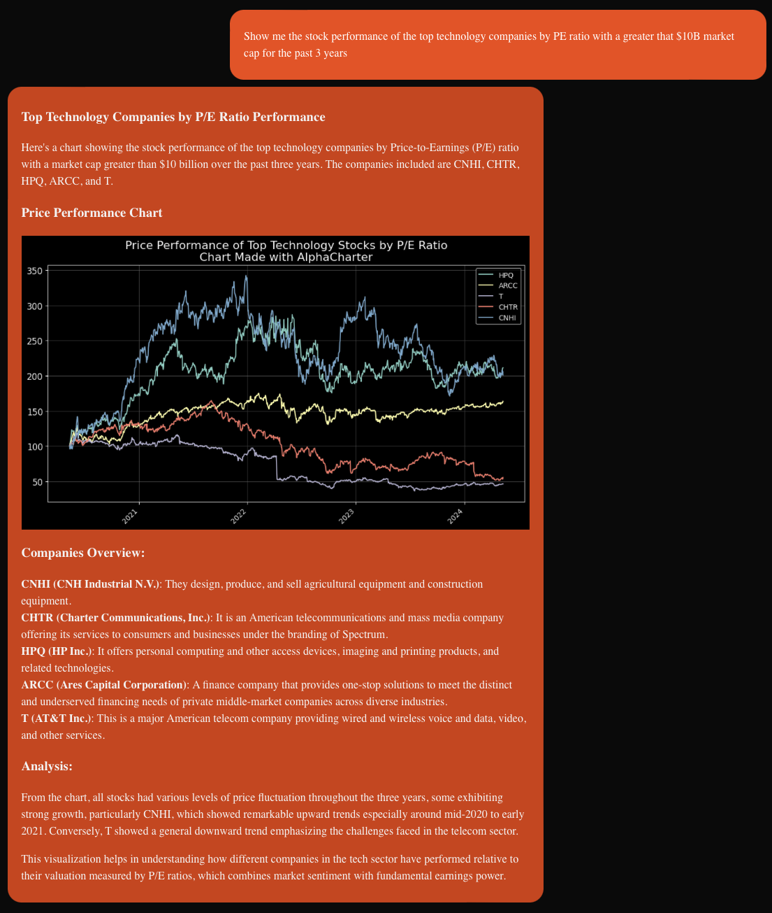
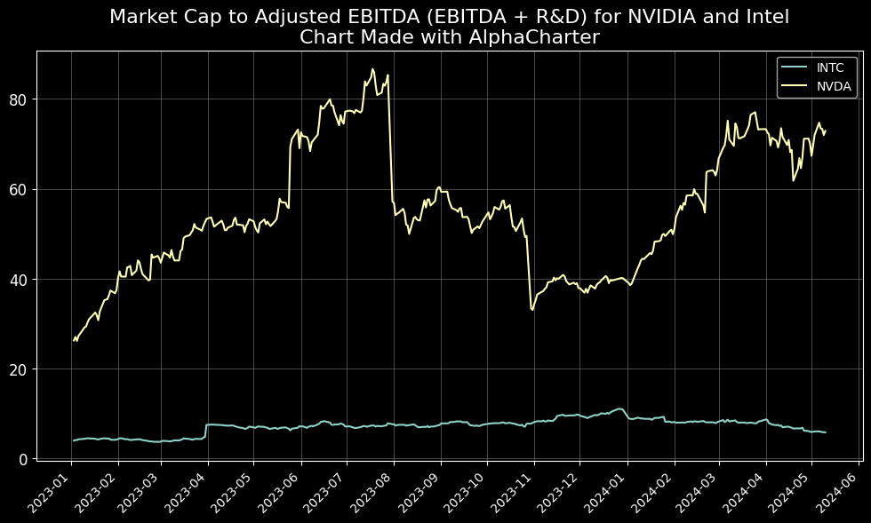
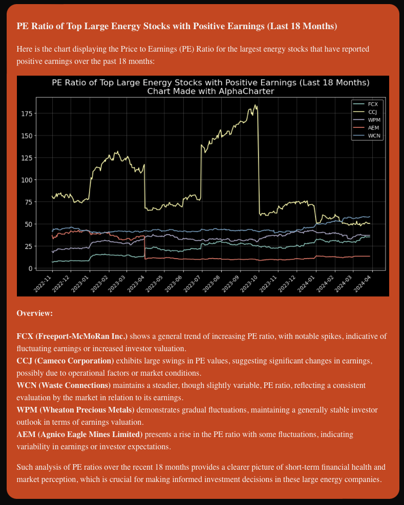
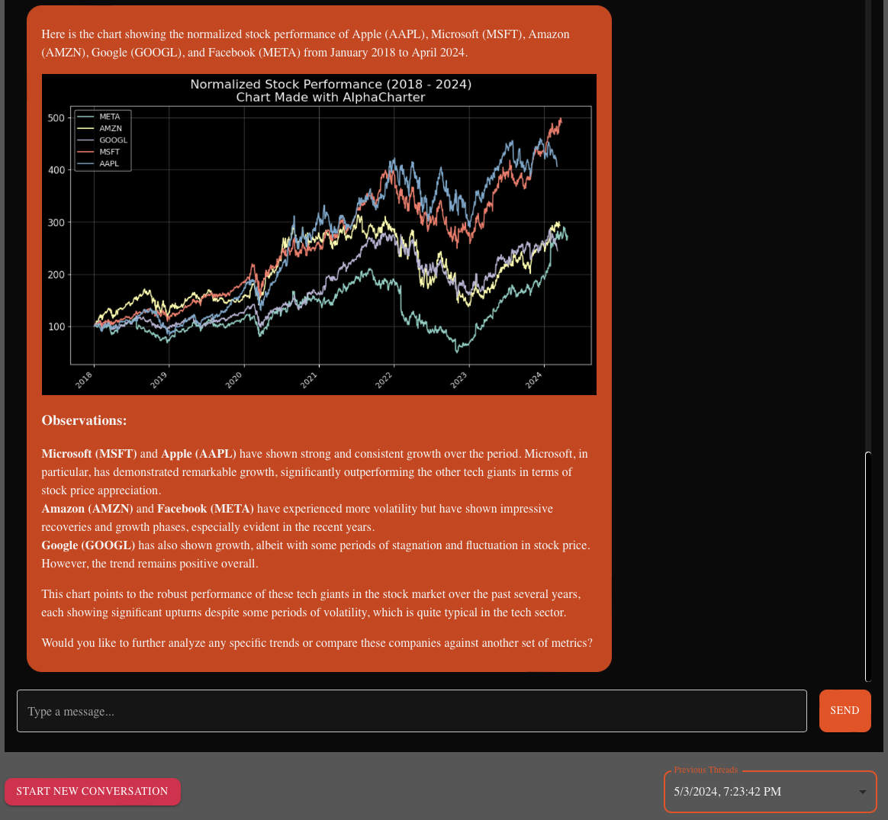
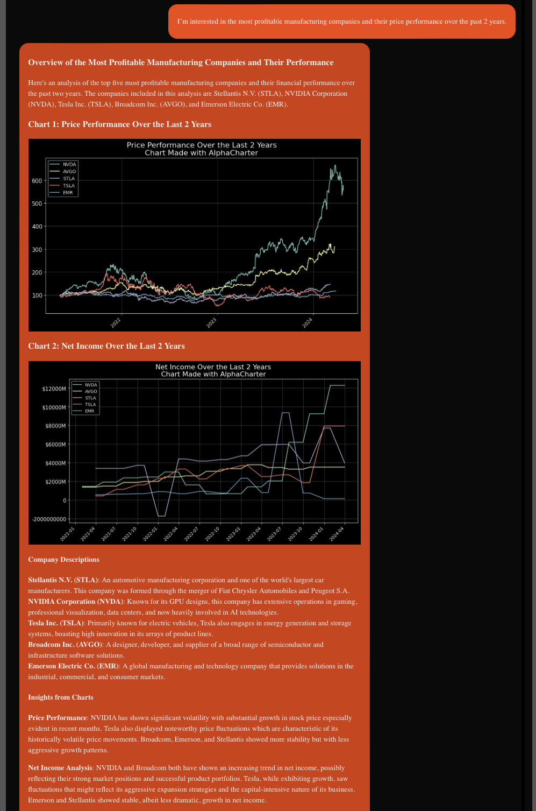

Introducing AlphaCharter
Your Personal Quant
Using AI to make 🆒 graphs
Have you ever felt frustrated by the steep learning curve and hefty price tag of financial analysis tools? What if there was a way you could perform sophisticated financial analysis and create engaging charts without knowing any Python or financial jargon? Welcome to AlphaCharter.xyz, where complex financial data becomes accessible and actionable, all through a virtual financial assistant, AlphaAI.
AlphaCharter is an AI Assistant and product I built over the past few months. You may have seen these awesome charts I've posted here, and you wished you had those same powers. Even if you're an All-Star Excel Jockey you could have a number of issues sourcing data for your own analysis and visualizations. Now you don't have to know how to do either of those boring things. All you need is an idea and the ability to describe what you want in natural language!
With AlphaCharter.xyz and the AlphaAI tool, you can describe the data you're interested in, and the AlphaAI assistant will help you research and visualize anything in the world of public US equities. You don't need to know the formulas for financial ratios, how to calculate them, how to use Python, or even what the tickersare for the stocks you want. The AI handles all of that and even explains it to you. A simple question about profitability can lead you into a conversation exploring EBITDA, Net Income, Gross Margin, Operating Margin, Free Cash Flow, and more.
AlphaAI can screen the investment universe and then generate a chart with any metric that can be calculated from a stock's fundamental earnings data and share prices.
AlphaAI has access to a financial database of public US equities and GAAP earnings for a maximum of 20 years. AI can apply the fundamental analysis which have been reserved for the Bloomberg terminal elite up until now. Now, anyone can have their own personal quant to aid in their investment research, run their own hedge fund, invest their mom's retirement account, or make cool posts on r/wallstreetbets.
The Value and for Whomst
Unlike traditional financial tools that require extensive training and deep pockets, AlphaCharter democratizes financial analysis, making it accessible for just $10-$50 a month—without sacrificing depth or functionality. Bloomberg terminals can be $2,000 per month and FactSet is $1,000 per month; hiring someone to manage a database of financial data and make it accessible would be even more.
AlphaCharter leverages the chatbot interface, which has become popular with AI tools since the rise of ChatGPT. AlphaCharter enables you to converse with a specially designed chatbot that has access to modern financial data. This chatbot also has the ability to generate charts and analyze financial data, using the features of modern general LLMs with specific datasets and functions that allow it to serve anyone interested in finance like retail investors.
By leveraging a chat interface the hope is to allow anyone who knows how to message a chatbot the ability to conduct financial analysis without the training, tools, and costs that were previously necessary.
We think the core of financial analysis requires access to data and tools. At AlphaCharter, we built and managed a database of company fundamentals and stock prices along with an AI Assistant that can use the tools to make numbers in an SQL database come to life. With this core built, we can simply add additional datasets and tools depending on what our users want. Crypto? ETFs? Options? Macroeconomic data? There are plenty of possibilities.
Financially Curious Users
The users of AlphaCharter would be anyone with an interest in finance who doesn't have access to the “standard” tools already or want to revisit how they're using those tools now.
Retail investors like r/wallstreetbets readers will especially recognize the benefits of AlphaCharter that enables them to view data and understand financials in a way that seemed inaccessible before using our AI chatbot. Access to data, visualizations, and what EBITDA stands for is now just a matter of asking. When you're ready to get fancy we're ready too. Maybe after understanding EBITDA you want to see other ways that you can adjust valuations for companies to understand just how they're valued or to dig much deeper into your investment thesis.
This can be one of many charts you get AlphaCharter to make as you dig in to your investment thesis, AlphaCharter helps anyone who's financially curious and wants to visualize financial data and have a sounding board to learn about finance and explore data together.
The Features
Here's what you can do with AlphaCharter RIGHT NOW. It's 100% live and working. I just limit access to approved accounts to limit the server load and costs since I don't charge (yet).
Chat with your financial assistant
The AI is tuned and instructed to answer all of your financial analysis questions. All of its features can be accessed on a chat page, where all you need to do is write a prompt and wait for a response. Older chat threads are accessible for your user, and you can continue any conversation you want. Because we're leveraging a general AI model, we get all the benefits that come from the general knowledge and reasoning of foundational LLMs.
"Can you make me an image of the PE ratio of the biggest energy stocks for the past 18 months?” since this is an LLM you can ask in any popular language and I get to flex some Duolingo skills.
The AI defaults to answering in English, but shows the AI found the largest stocks by Net Income and created a graph of their PE ratios with some analysis
Any chat you have with the AI assistant can be pulled up and continued.
Stock Screener
The AI can filter companies in a similar way to a “stock screener” you might use in another financial app. This can be done explicitly, like the prompt “What are the highest-margin technology companies with at least a $10B market cap?” Or through a general question like “I'm interested in the most profitable manufacturing companies and their price performance over the past 2 years.”
Our AI found the most profitable companies by screening stocks in the Manufacturing sector by the highest net income, then used that list of companies to show the price performance and how their net income has changed over the past 2 years. So with one prompt, our AI uses logic to decipher what a user would want to see and how to utilize the tools it has access to.
Chart Creator
We know the best way to get a feel for this data is through visualizations. No one wants to see a table output; they want a cool graph they can share. AlphaAI does just that by taking your data request and creating a chart in Python for you, which it then shares, and you can download and do whatever you want with.
The chart is currently made in Python's ‘matplotlib' library so not only do you get a cool visual but it won't have the standard Excel Calibri font and color scheme. Other than the ‘Chart Made with AlphaCharter' in the title, people might think you're some cool data scientist or something.
I don't want to influence your use of this product too much since this is very much an MVP (Minimum Viable Product) and I want to build the tool that solves user problems rather than tell them what their problem is and to use my specific solution. However, I will say this product works best for people who are experienced with using AI chatbots. People who know to keep asking questions so they can refine the AI output and explore new concepts. One question and answer is not the end of your conversation. Everything is handled in threads and uses the context of previous messages (only in that thread) to refine the answers.
Why?
Built out of my personal need to bypass expensive financial tools, AlphaCharter solved my challenges and is ready to revolutionize your financial analysis too. For a long time I've worked on how to use financial data as a non professional. I've maintained huge CSVs of earnings on my PC to managing SQL databases that only I was looking at. Then I realized I could use AI to allow this data to be more accessible and make a real product out of this.
Since I already had a knack for simplifying complex data, I designed AlphaCharter to use the latest AI technology to make use of that data. This ensured that our financial assistant was powerful and incredibly user-friendly, removing the huge barriers to entry that complicated tools like TradingView has or the exorbitant cost of something like Bloomberg. I don't think this is a direct competitor to those products but I know that AlphaCharter can expand the market for financial data and democratize access to anyone who's interested.
I'm eager to have more people try this product in this MVP stage. If you want access, email me at max@alphacharter.xyz and I'll be happy to grant free usage in exchange for feedback.
Join me in refining AlphaCharter! Sign up for a free trial, and let's shape the future of accessible financial analysis together. Your feedback is invaluable and will drive the evolution of a tool designed to empower its users. Email me at max@alphacharter.xyz for exclusive access.